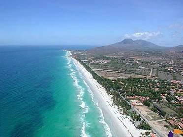

3 Places to Visit in Venezuela
Venezuela is a country of amazing landscapes where you can find varied regions to explore. It has mountains, the Caribbean coast, beaches, islands, inland dunes, and more. Its a tropical country on the northern coast of South America.
There have been considerable developments in tourism in recent decades, particularly due to the country's privileged geographical position, the variety of landscapes
1. Margarita Island
Enjoyment and relaxation are some of the top attractions on Margarita Island. Beautiful beaches and landscapes can be found on the island
2. Salto Angel
Located in Venezuela's Gran Sabana, Without a doubt, it is the most popular tourist attraction in Venezuela

Cayo Sombrero
There are plenty of amazing islands and beaches to visit along Venezuela's coasts which are all bathed in the Caribbean Sea. Cayo Sombrero is a tiny island located a few kilometers off the coast of Chichiriviche, in Morrocoy National Park